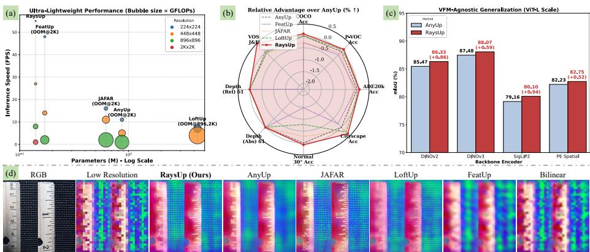

Figureure 2 · : Overview of RaysUpFig. 2: Overview of RaysUp. Given an image I and a low-resolution VFM feature map $\mathcal { F } ^ { l r }$ , RaysUp reconstructs a high-resolution feature map $\mathcal { F } ^ { h r }$ at an arbitrary target resolution. A lightweight Spatially Decoupled Guidance Encoder first extracts direction-aware guidance features $\mathcal { F } _ { g } ,$ , which are adaptively pooled to generate target-resolution queries $\mathcal { Q } _ { g }$ and VFM-resolution keys $\kappa _ { g }$ . After RayPE, the resulting geometry-aware ray representations $\mathcal { Q } _ { r a y }$ and $\boldsymbol { \mathcal { K } } _ { r a y }$ inject implicit 3D spatial priors into the attention computation. Finally, a geometry-aware Neighborhood Cross-Attention module aggregates low-resolution features $\mathcal { F } ^ { l r }$ as values to produce the reconstructed high-resolution features, ensuring cross-resolution spatial consistency while preserving underlying 3D geometric structure.这张图概括 RaysUp 的整体方法流程。阅读时先看模块之间传递的训练信号，再看作者如何把目标拆成可优化的子问题。

Figureure 1 · : We propose RaysUp, an (a) ultra-lightweight, (b) task-agnostic, and Fig. 1: We propose RaysUp, an (a) ultra-lightweight, (b) task-agnostic, and (c) VFMagnostic upsampling framework, capable of upsampling backbone features to arbitrary resolutions while preserving (d) high semantic fidelity and geometric consistency.这张图概括 RaysUp 的整体方法流程。阅读时先看模块之间传递的训练信号，再看作者如何把目标拆成可优化的子问题。